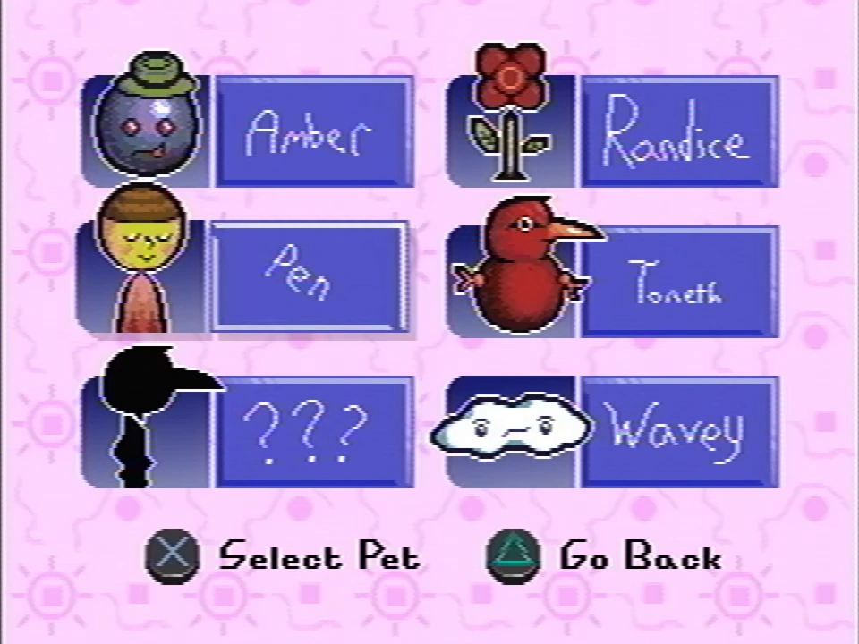

Pets menu
Pets are collectible entities in Petscop that are the main premise of the surface game. They often require solving a puzzle to catch. When a pet is acquired, rainbow text reading "Caught" appears along with a sound effect.
Some pets are referred to as people by the Child Library.
There is a part of the pause menu to view all pets. All pets have a silhouette unless currently in the player's possession. Pets the player possesses can have a description read by interacting with their pet slot in the menu.
All of the pets from Even Care, along with Toneth, appear on the first page. The Care "Pets", along with an empty space, appear on the second page, which is inaccessible until sometime after entering the code from the note.
The blank space stays unused up until Petscop 23, where it is used to hold the egg from the machine. The description for the egg is simply comprised of a question mark and the last line of Amber's description ("You should start thinking about that.").
It is noted in Petscop 12 in a textbox directed to Tiara (addressed as "Belle") that the menu space was originally intended for Belle after she became Tiara, but it instead went unused since she never became Tiara. This may be referring to the blank space in the pets menu.
There is a possibility that Hudson was planned to be a Pet in the second level of the game.
{kind=link}
{kind=link}